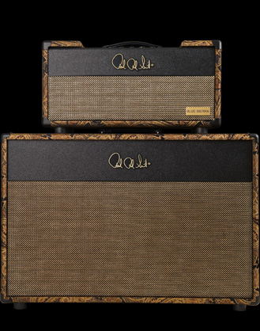

Evocative of classic British and American amps - but with a distinct Texas attitude - the Blue Sierra offers gain structured for equally great cleans to medium gain overdrive tones. With the Blue Sierra it's easy to get a big 3D sound and hard to get a bad one at any setting. Available in EL34 or 6L6.